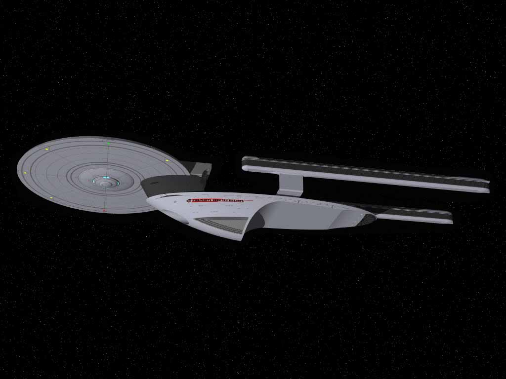

 |
-
USS HOOD
-
NCC-42296
Federation starship, Excelsior class. Commanded by Captain Robert DeSoto.
Commander Wil Riker serve aboard this ship prior to his assignment on the
Enterprise D. The Hood was last send to the Romulan Neutral Zone border
in preparation for a possible battle after Starfleet received warning of
a Romulan buildup on Nelvana III in 2366. The ship was named for British
Admiral Sir Horae Hood who fought in the Battle of Jutland during the Earth
conflict, World War II. |